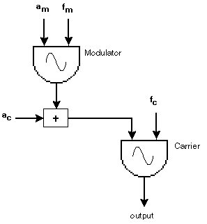
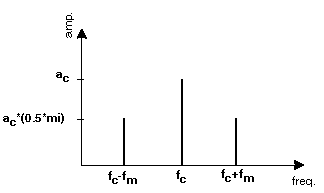
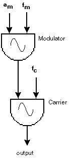
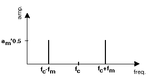
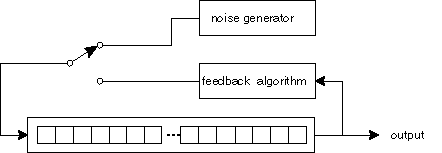
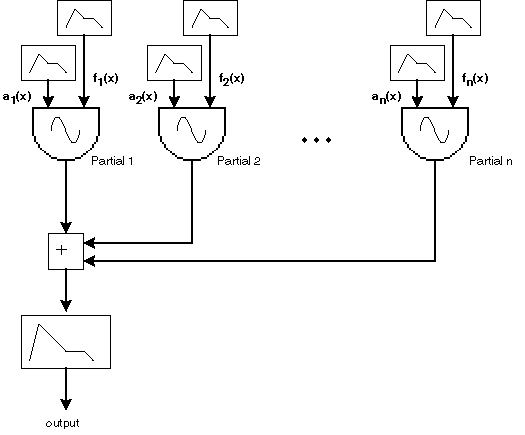

Introduction
Computer sound synthesis is becoming increasingly attractive to a wide range of musicians. On one hand and with very few exceptions, manufacturers of mainstream synthesizers have not been able to produce many established powerful synthesis techniques on an industrial scale. On the other hand, however, the sound processing power of the personal computer is increasing, and is becoming more affordable. Computers are highly programmable and any personal computer will soon be able to run Csound in real-time, capable of synthesizing sounds using any technique that one could possibly imagine.
Musicians often may not wish to use preset timbres; they may, rather, prefer to design their own instruments. There are a variety of ways to design instruments on a computer and the choice of a suitable synthesis technique is crucial for effective results. Some techniques may perform better than others for some specific timbres, but there are no definite criteria for selection; it is basically a matter of experience and taste. In this chapter we introduce a taxonomy for sound synthesis techniques aimed at supporting the less experienced instrument designer in the definition of their own criteria. In general, the more intuitive and flexible the technique, the more attractive it tends to be. For example, those techniques whose parameters provide meaningful ways to design instruments and timbres are usually preferred to those techniques whose parameters are entirely based upon abstract mathematical formulae.
We begin with a background discussion about instrument design here; we then present and illustrate three approaches to instrument design, which naturally emerge from the proposed taxonomy. This chapter concludes with a discussion on instrument design from the author's own point of view, as a composer.
Defining Boundaries of Abstraction
In traditional Western music, musicians work with discrete musical elements, such as notes and their duration. Composers then are encouraged to think both of the production of sounds as the multidimensional control of these elements and also the notation of the music in a score by means of symbols. The performer then interprets the score by relating these symbols to gestures on a musical instrument.
Western music traditionally has a certain boundary of abstraction which characterizes its representation (for example, the abstraction of a sound event as a note). The inner acoustic features of a sound (for example, amplitude of partials and harmonic content) are not directly relevant for traditional performers and composers, who tend to learn only how to obtain the desired results by acting on the control mechanism of the instrument: they learn what actions to perform from symbols arranged in a score, in order to play the music. Musicians, in this case, are purely concerned with the arrangement of symbols in a score, which may require further interpretation since some sound parameters (for example, timbre) cannot be explicitly represented within the limitations of traditional notation.
Contemporary techniques of orchestration do encourage the creation of unusual timbral effects. There are, however, no obvious symbols to notate the harmonic content of individual instruments. Even if those symbols were to be created, the performer would not normally know how to interpret them because traditional orchestral instruments do not have "keys" for changing its harmonic spectrum. In traditional Western music, composers and performers have to work with a conceptual model of individual instruments, which has a certain boundary of abstraction that gives very little room for significant manipulation of timbre. The human voice may be considered an exception to this case; contemporary composers have achieved a great variety of timbres using the human voice alone.
In order to design a computer instrument, one should define suitable boundaries of abstraction upon which the synthesis parameters will be based. In traditional Western music, a performer transforms musical symbols into instrumental gestures; similarly, a computer works with sound synthesis parameters, in order to produce a sound (for example, the amplitude and frequency values for an oscillator).
Pierre Schaeffer, in Book I of his "Trait_ des objets musicaux", (Schaeffer 1966) proposes an inspiring notion, which is worth bearing in mind when designing a new musical instrument. He proposes that any device is a musical instrument if it allows one to obtain a varied collection of sonic objects, whilst maintaining a certain aural identity. The identity of an instrument is maintained by the permanence of certain consistent sound features, which allow for the variation of other features.
Taxonomy and Modeling Approaches
A growing number of synthesis techniques have been invented and used worldwide (Dodge and Jerse 1985, Roads 1996, Russ 1996, Miranda (forthcoming) 1998). There is not, however, a generally agreed taxonomy to study these techniques. Indeed, the synthesizer production industry sometimes makes the situation worse by creating various marketing-oriented labels for what might essentially be the same synthesis paradigm. In order to aid the beginner to navigate through this vast conceptual ocean, we suggest a taxonomy for synthesis techniques, based upon the idea that these techniques work based upon a model. For instance, some synthesis models tend to employ loose mathematical abstractions, whereas others attempt to mimic mechanical-acoustic phenomena. Synthesis techniques may thus be classified into three classes according to their modeling approach: Loose Modeling, Physical Modeling and Spectral Modeling. It is important to observe that the boundaries of this taxonomy may, however, overlap; some techniques may qualify for more than one class.
Loose Modeling techniques tend to provide synthesis parameters that bear little relation to the acoustic world; they are usually based entirely upon conceptual mathematical formulae. Examples of Loose Modeling techniques include: Amplitude Modulation (AM), Frequency Modulation (FM), Waveshaping and Granular Synthesis. It is often difficult to predict the outcome and to explore the potential of a loose model. Amplitude Modulation (AM), for instance, is a powerful technique and extremely easy to program but the relationship between a sound spectrum and its respective synthesis parameters is far from intuitive.
Physical Modeling and Spectral Modeling attempt to alleviate this problem by providing less obscure synthesis parameters; both support the incorporation of natural acoustic phenomena. The fundamental difference between Physical and Spectral Modeling techniques is that the former tends to model a sound at its source, whilst the latter tends to model a sound at the basilar membrane of the human ear.
In general, Physical Modeling techniques work by emulating the functioning of acoustic musical instruments. The key issue of Physical Modeling is the emulation of acoustic sound generators rather than of the sounds themselves. For example, whilst some synthesis techniques (for example, Additive Synthesis) attempt to produce a guitar-like sound using methods that have little resemblance to the functioning of the guitar, a Physical Modeling technique would attempt to synthesize it by emulating the behavior of a plucked string. Examples of Physical Modeling techniques include: Recirculating Wavetable, Modal Synthesis and Waveguides.
The implementation of a physical model from scratch is not straightforward. However, once the model is implemented, it is not complicated to interpret the role of their synthesis parameters. Take for example a singing voice-like instrument: a loose model using FM would provide relatively complex synthesis parameters, such as modulation index and frequency ratio. Conversely, a physical model using Waveguides would provide more easily interpreted synthesis parameters, such as air pressure, vocal tract shape and throat radiation output.
Spectral Modeling techniques have their origins in Fourier's Theorem and Additive Synthesis. Fourier's Theorem states that any periodic waveform can be modeled as a sum of partials at various amplitude envelopes and time-varying frequencies. Additive Synthesis is accepted as perhaps the most powerful and flexible Spectral Modeling method, but it is difficult and expensive to run. Musical timbres are composed of hundreds of time-varying partials, including harmonic, non-harmonic and noise components. It would require several oscillators, noise generators and envelopes to simulate musical timbres using the classic additive technique. The specification and control of the parameter values for these components are difficult and time-consuming.
Alternative methods have been proposed to improve this situation, by providing tools to automatically obtain the synthesis parameters from the analysis of sampled sounds; for example, Phase Vocoding and Linear Predictive Coding. The analysis techniques used here usually store filter coefficients rather than samples. Note that in these cases, the synthesis technique may use a combination of filters, as in Subtractive Synthesis, to generate the spectral components of the sound. The great advantage of this type of Spectral Modeling over plain sampling is that musicians can manipulate these coefficients in a variety of ways in order to create new sounds. Sound-morphing, for example, can be achieved by varying the coefficients accordingly.
Loose Modeling techniques are relatively cheap and easy to industrialize onto LSI chips, but they are difficult to control. Conversely, Physical Modeling techniques are difficult and expensive to industrialize, but are relatively straightforward to control. Spectral Modeling lies between these two extremes. It is generally agreed, however, that no single synthesis technique will ever be able to fully satisfy the exacting musician. In the not so distant future, musicians will probably prefer to give up collecting synthesizer modules and keyboards, and rather opt for a personal computer running a powerful sound synthesis software, such as Csound.
An example technique for each modeling approach is discussed below. Fully working programming examples are provided in the accompanying CD-ROM.
Loose Modeling: Amplitude Modulation
Modulation occurs when some aspect of an audio signal (called a carrier) varies according to the behavior of another audio signal (called a modulator). Amplitude modulation therefore occurs when a modulator drives the amplitude of a carrier.
The tremolo effect may be considered to be an example of amplitude modulation; it is achieved by applying a very slow sub-audio rate of amplitude variation on a sound (i.e. less than approximately 18 Hz). If the frequency of the variation is raised to the audible band (i.e. higher than approximately 18 Hz) then additional partials (or sidebands) will be added to the spectrum of the signal.
Simple amplitude modulation synthesis uses only two sinewave generators (or oscillators): one for the carrier and the other for the modulator. The frequency of the carrier oscillator is usually called fc whilst the frequency of the modulator oscillator is called fm .
Complex amplitude modulation may involve more than two signals; for example, the amplitude of oscillator C is modulated by the outcome of oscillator B, which in turn is amplitude modulated by oscillator A. Signals other than sinewaves (for example, noise) may also be employed for either carriers or modulators. The more complex the signalling system, then the more difficult it is to predict the outcome of the instrument.
There are two variants of amplitude modulation: classic Amplitude Modulation (AM) and Ring Modulation (RM).
In AM (Figure 1), the output from the modulator is added to an offset amplitude value. See example am.orc/sco on the accompanying CD-ROM.

Figure 1: Classic Amplitude Modulation
Note that, if there is no modulation, then the amplitude of the carrier would be equal to this offset value. The amplitude of the modulator is specified by an amount of the offset amplitude value (ac) in relation to a modulation index (mi): am = ac*mi. If the modulation index is equal to zero then there is no modulation, but if it is higher than zero, then the carrier wave will take an envelope with a sinusoidal variation. Example:
;===========================
instr 1
;p4 = modulation index (mi)
;p5 = modulator frequency (fm)
;p6 = carrier amplitude (ac)
;p7 = carrier frequency (fc)
;
am = p4*p6 ;modulator amplitude (am)
kenv linen 1,0.1,p3,0.05
amod oscili am,p5,1
acar oscili amod+p6,p7,1
outs acar*kenv,acar*kenv
endin
;===========================
In simple _AM, the spectrum of the resulting signal contains energy at 3 frequencies: the frequency of the carrier (fc) plus two sidebands (fc-fm and fc+fm, respectively). The amplitude of the carrier frequency remains unchanged, whilst the amplitudes of the sidebands are calculated as follows: ac*(0.5*mi). For example, when mi=1, the sidebands will have 50% of the amplitude of the carrier (Figure 2).

Figure 2: The resulting spectrum of simple AM
In RM the amplitude of the carrier is entirely determined by the modulator signal alone. Thus if there is no modulation, then there is no sound (Figure 3). Example:
;===========================
instr 1
;p4 = modulator amplitude (am)
;p5 = modulator frequency (fm)
;p6 = carrier frequency (fc)
;
kenv linen p4,0.1,p3,0.05
amod oscili kenv,p5,1
acar oscili amod,p6,1
outs acar,acar
endin
;===========================

Figure 3: Ring Modulation
In simple RM (i.e. both signals are sinewaves), the resulting spectrum contains energy only at the sidebands (i.e. fc-fm and fc+fm); the frequency of the carrier wave will not be present. RM therefore may alter the pitch of the carrier signal. For instance, if fc=440 Hz and fm=110 Hz, then the instrument will produce two sidebands of 330 Hz and 550 Hz respectively. In RM the energy of the modulator signal is split between the two resulting sidebands (Figure 4). As there is no fundamental frequency in the resulting spectrum, the sounds of RM usually do not have a strong sensation of pitch. See example rm.orc/sco on the accompanying CD-ROM.
RM may also be achieved by the multiplication of two signals. The multiplication of two sounds results in a spectrum containing frequencies that are the sum and difference between the frequencies of each component in the first sound, and those of each component in the second.

Figure 4: The resulting spectrum of simple RM
Both AM and RM can use signals other than sinusoids, applying the same principles discussed above. In any case, great care must be taken in order to avoid foldover distortion (i.e. generation of frequencies above 50% of the sampling rate); note that the highest frequencies of the two sounds will be additive.
Physical Modeling: Recirculating Wavetable
The Recirculating Wavetable uses a time-varying table-lookup to simulate the behavior of a vibrating medium. The basic functioning of this method starts with a table-lookup of a fixed length, filled with random samples. In this case, the table functions as a queue of sample values, rather than as a fixed array, as in the case of a simple oscillator. As samples are output from the right side of the queue, they are processed according to a certain algorithm, and the result is fed back to the left side (Figure 5). The algorithm for processing the samples defines the nature of the simulation; for example, cellular automata (Miranda (forthcoming) 1998).
Although this method does not bear strong physical resemblance to the medium being modeled, its functioning does resemble the way in which sounds produced by most acoustic instruments evolve: they converge from a highly disorganized distribution of partials (characteristic of the initial noise components of the attack of a note) to oscillatory patterns (characteristic of the sustained part of a note).

Figure 5: The Recirculating Wavetable technique
The Karplus-Strong algorithm is a classic example of Recirculating Wavetable. The algorithm, devised by Kevin Karplus and Alex Strong, averages the current output sample of a delay line with the preceding one (as in a low-pass filter), and feeds the result back at the end of the delay queue. Note that, in this case, the delay line and the wavetable (or table-lookup) are the same thing.
The following example illustrates the implementation of a standard Karplus-Strong algorithm devised by Russel Pinkston:
;===========================
instr 1
;p4 = amplitude
;p5 = pitch
;
icps = cpspch(p5)
asig init 0
kcount init 1/icps*kr ;loop counter
;----------------------
adel delayr 1/icps ;length od delay line is 1/cps
asig tone adel,sr/2 ;filter output of delay
if (kcount < 0) kgoto continue
;----------------------
kloop: ;firstly fill delay line with noise
asig rand p4,-1
kcount = kcount-1 ;decrement loop counter
;----------------------
continue:
delayw asig
if (kcount >= 0) kgoto kloop
outs asig, asig
endin
;===========================
It firstly fills a delay line with noise
kloop:
asig rand p4,-1
kcount = kcount-1
...
delayw asig
if (kcount >=0) kgoto kloop
then it feeds the output of the delay line through a first-order LPF (Csound's tone)
adel delayr 1/icps
asig tone adel,sr/2
...
out asig
and feeds the result back into the delay line. The pitch of the sound (icps=cpspch(p5)) determines the length of the delay line (adel delay 1/icps). See example pinkston.orc/sco on the accompanying CD-ROM.
This technique produces simulations of the sound of a plucked string. The "pluck" effect is _achieved by gradually removing the high frequency components from the signal that is fed back into the delay line. The signal bursts with a loud, bright percussive-like quality, then it darkens and turns into a simpler sinusoidal type of sound. The decay of the sound is normally dependent upon the size of the wavetable, but it is possible to control the decay length by adding time-stretching mechanisms to the original algorithm; several variations on the original Karplus-Strong technique have been developed in order to produce effects other than the plucked-string effect. For example, simulations of drum-like timbres can be achieved by inverting the sign of a few output samples, according to a probability factor.
Complex Physical Modeling techniques tend to require multiple delay lines, recursive loops and complex filtering; such instruments are often complicated to programme. For these cases, Csound developers often design add-on units that encapsulate specific algorithms. For example, Csound now provides pluck, a special unit for the implementation of the Karplus-Strong technique. It needs five parameters to function:
1. amplitude (kamp)
2. frequency (kcps)
3. size of the recirculating table-lookup (icps)
4. the nature of the initialization (ifn)
5. the type of feedback method (imeth)
The size of the recirculating table-lookup is specified in Hz and is usually set equal to the frequency value (kcps = icps). The table-lookup can be initialized either by means of a random sequence of samples produced by the pluck unit itself or by means of a user-defined function; to initialize the table with random samples, set ifn=0. As for the feedback method, Csound offers six algorithms, but the simple averaging method, described above, is the most commonly used (i.e., imeth=1). See example pluck.orc/sco on the accompanying CD-ROM.
Spectral Modeling: Additive Synthesis
Additive Synthesis functions by summing up individually generated partials in order to form a specific sound. By partials we refer to any component of a spectrum. Musical timbres are composed of a number of partials, including harmonic, non-harmonic and noise components. The basic architecture of an Additive synthesizer employs a number of oscillators with appropriate amplitude and frequency envelope functions for each partial (Figure 6).

Figure 6: The basic architecture of an Additive Synthesizer
The output from all oscillators are added together to obtain the compound sound. Example of a simple additive synthesiser:
;===========================
instr 1
;p4 = amplitude
;p5 = pitch
;---------
;partial 1
kenv1 expon 1,p3,0.000976
a1 oscili kenv1*p4,p5*0.56,1
;---------
;partial 2
kenv2 expon 0.67,p3*0.9,0.000976
a2 oscili kenv2*p4,p5*0.56+1,1
;---------
;partial 3
kenv3 expon 1,p3*0.65,0.000976
a3 oscili kenv3*p4,p5*0.92,1
;---------
asig = (a1+a2+a3)/3
outs asig, asig
endin
;===========================
Given enough oscillators and appropriate envelopes, this instrument is capable of generating virtually any sound. See example add.orc/sco on the accompanying CD-ROM.
A more sophisticated Additive synthesizer would require dozens of oscillators, noise generators and envelope functions in order to produce a satisfactory sound. It is very difficult to manage this vast amount of variables, and determining values for these parameters is both difficult and tedious. Analysis techniques to automatically obtain parameters from sampled sounds have been developed to get round this problem.
More sophisticated Spectral Modeling techniques work in two stages - analysis and resynthesis - which can be performed in a number of ways. The most popular ones use the Fast Fourier Transform (FFT) method and a technique known as filter inversion to synthesize the partials. In this case, a bank of filters is used to extract information about the components of a sound. This information is broken down into "filter coefficients" that describe the behavior of the individual partials of the sound. These coefficients are then stored and used to resynthesize the sound using the filter inversion technique. Unlike samples, filter coefficients can be easily manipulated to create new sounds.
Conclusion
Loose Modeling techniques tend to bestow their own intrinsic characteristics upon the sounds they produce. For example, AM or FM instruments produce a clearly identifiable AM or FM sound quality; a simulation of a bell in FM always sounds FM-like. There is nothing wrong with this, such techniques are useful to produce interesting sounds not necessarily found in the "real" acoustic world. Physical Modeling techniques tend to favour the design of instruments with strong permanence of the sound characteristics of their acoustic counterpart; for example, a standard Karplus-Strong instrument will always produce a "plucked" string sound. Conversely, Spectral Modeling techniques tend to provide the means to manipulate what would constitute the character of a timbre; for example, sound-morphing effect.
The problem with a computer is that its possibilities are limitless. It is an "instrument" whose timbre does not exist until a programmer defines its boundaries and constraints. We propose that the definition of the boundaries of abstraction and constraints must involve the specification of a strong synthesis criterion that maintains tangible common characteristics but allows variations to emerge. In this case, Physical Modeling techniques, being inherently more compatible with Schaeffer's notion, discussed above, tend to produce more plausible instruments.
References
Dodge, C. and Jerse, C., 1985, Computer Music, New York:Schirmer Books.
Miranda, E. R., (forthcoming) 1998, Computer Sound Synthesis for the Electronic Musician, Oxford/UK:Focal Press.
Roads, C., 1996, The Computer Music Tutorial, Cambridge/MA:The MIT Press.
Russ, M., 1996, Sound Synthesis and Sampling, Oxford/UK:Focal Press.
Schaeffer, P., 1966, Trait_ des objets musicaux, Paris:Edition du Seuil.